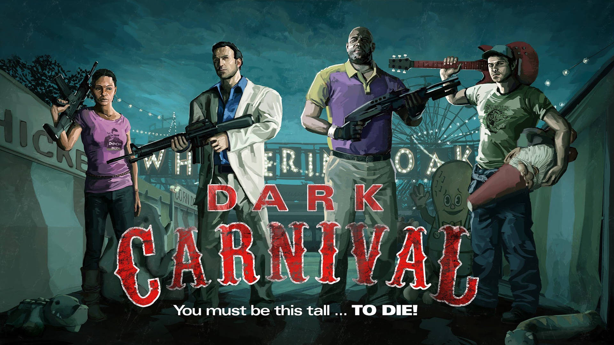
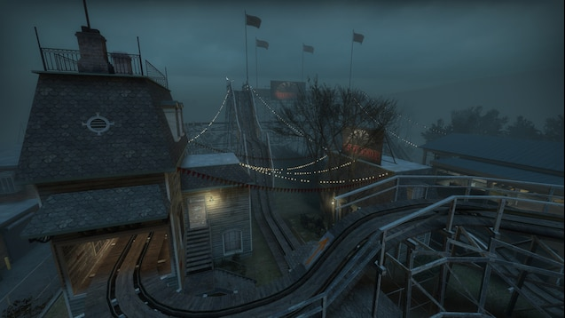

La campaña "Dark Carnival" comienza cuando los supervivientes: Coach, Ellis, Nick y Rochelle abandonan su coche en una carretera bloqueada. El objetivo es llegar a un parque de atracciones donde se decía que había una zona de evacuación.

La primera parte los lleva por una carretera llena de autos abandonados e incluso un Motel. Tras abandonar la carretera, y sobrevivir a todos los zombis que les esperaban en el Motel los sobrevivientes lograron llegar a la entrada del parque de atracciones usandola como refugio.
Al entrar al parque de atracciones se pueden ver las áreas de juego, puestos de comida y atracciones que quedaron abandonadas. El grupo debe recorrer el parque hasta llegar a la zona del tunel del amor que usaran como un camino corto para pasar por todo el parque.
Para acortar el camino los sobrevivientes planean usar una de las principales atracciones del parque: la montaña rusa. Activaron la atracción llamando la atención de una gran cantidad de infectados, agregando que todo el reccorido debía ser completado a pie. Los sobrevivientes podrían caer facilmente por los ataques de los infectados, por su fortuna lo que alguna vez era la fila de espera de la atracción ahora sería un refugio temporal.

Los sobrevivientes llegan a una serie de graneros y establos que formaban parte del entorno rural del parque. Necesitaron encontrar un camino seguro a través del área y llegar a la entrada del escenario donde se iba a llevar a cabo un concierto, lastimosamente las puertas de seguridad estaban cerradas y al abrirlas empezo a sonar una alarma que alerto a los infectados, afortunadamente lograron sobrevivir y pudieron acceder al escenario. El final de la campaña sucede en el escenario del concierto del parque de atracciones. Los sobrevivientes tuvieron que encender luces las y activar los sonidos para llamar la atención de los helicópteros de rescate de la C.E.D.A. Mientras esperaban al helicóptero tuvieron que defenderse de grandes hordas de zombies atraídos por el ruido y las luces del concierto. Finalmente cuando los Tanks empezaban a llegar al lugar del concierto el helicoptero encontro espacio para aterrizar y salvar a los sobrevivientes.